more
recommend
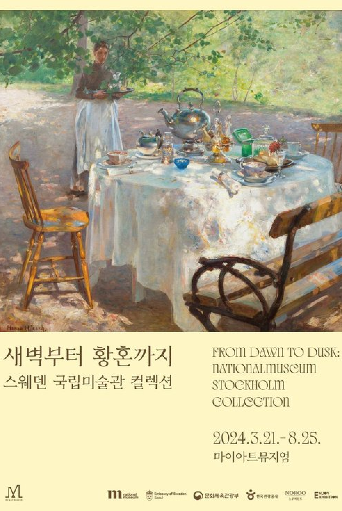
새벽부터 황혼까지 :
스웨덴 국립미술관 컬렉션 2024. 03. 21 - 08.25 제 1장. 혁신의 새벽
제 2장. 자유의 정오
제 3장. 거대한 황혼
제 4장. 아늑한 빛
스웨덴 국립미술관 컬렉션 2024. 03. 21 - 08.25 제 1장. 혁신의 새벽
제 2장. 자유의 정오
제 3장. 거대한 황혼
제 4장. 아늑한 빛
review

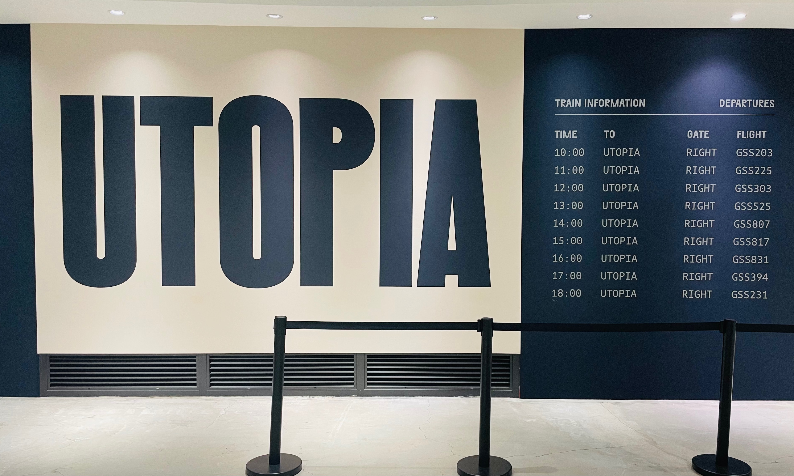
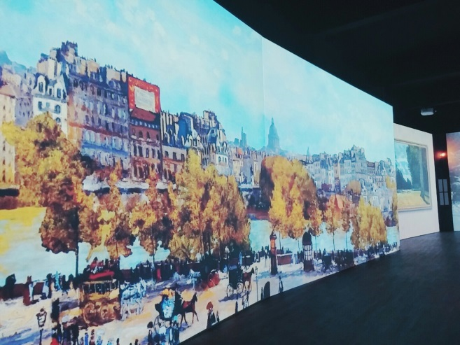
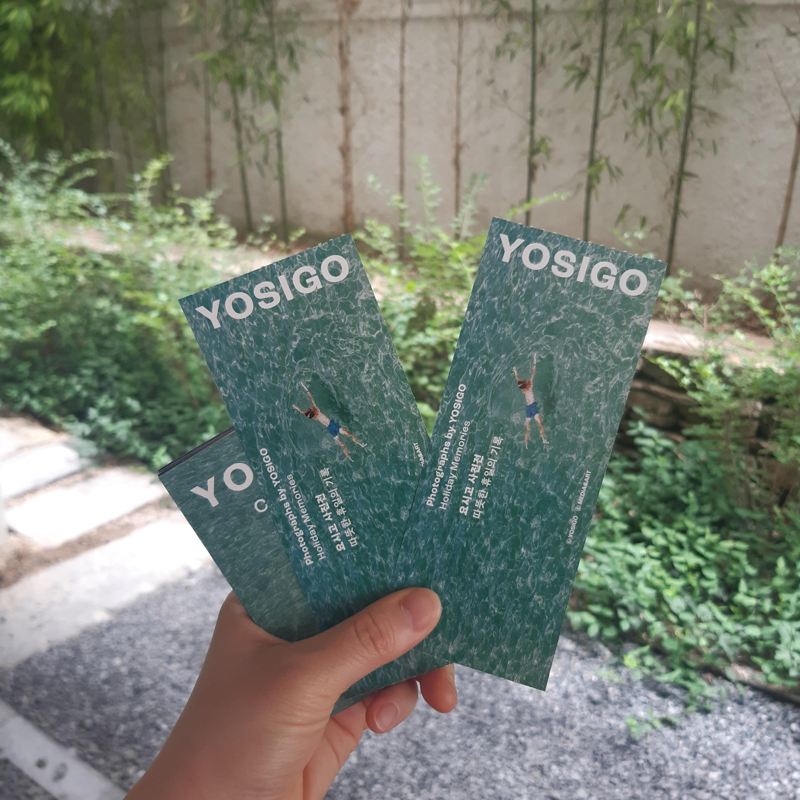
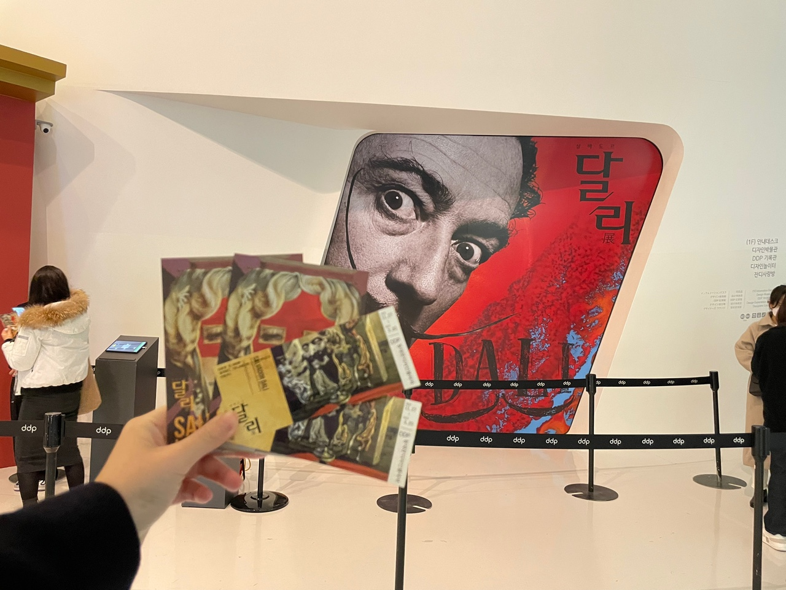
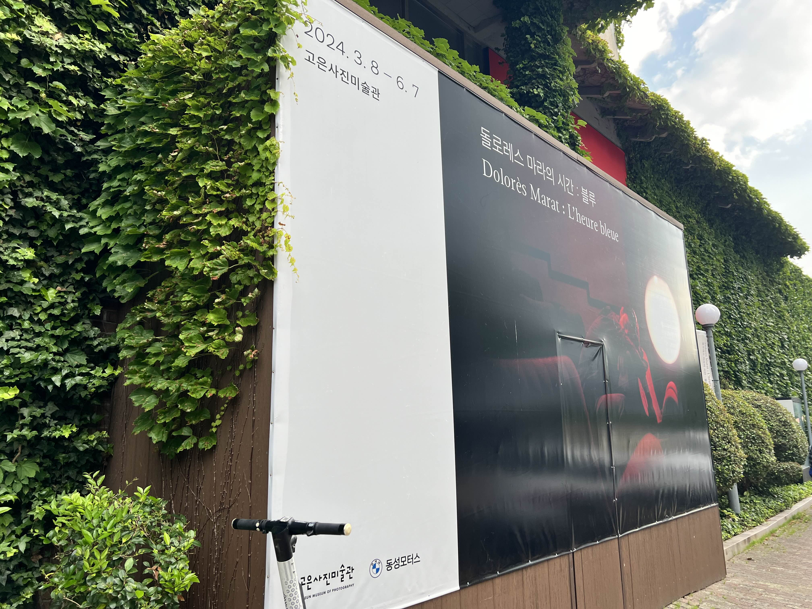
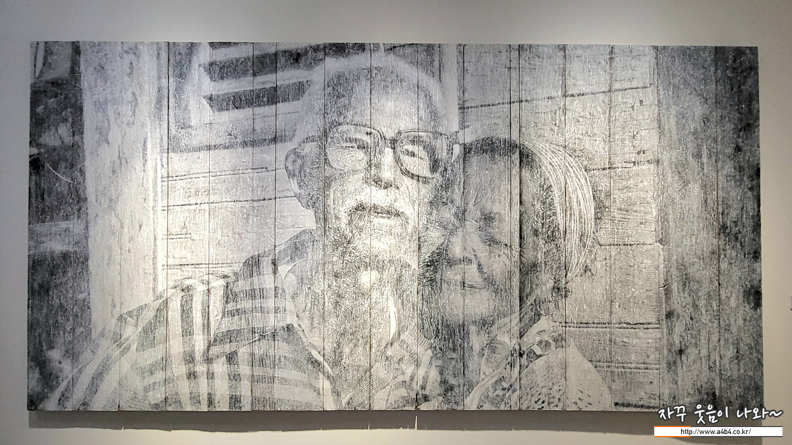
유토피아: 노웨어, 나우 히어
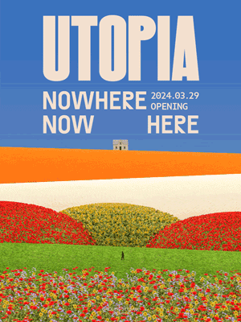
전시관의 테마마다 가지고 있는 냄새(실제로 조향하였다고 함.)가 전시를 볼 때에 새로운 감각을 선사해주고 보통의 시각적으로만 즐기는 전시가 아닌 후각적으로 받는 느낌과 쉽게 볼 수 없게 한 전시물들도 좋은 전시라는 인식을 심어주었고, 단순히 정적인 작품들만 있는 것이 아니라 동적으로 표현되어 있는 작품들과 적절히 조화를 이루는 전시로 한동안 여운이 남았다.
wpdn123w*** | 2024.04.10
모네, 빛을 그리다
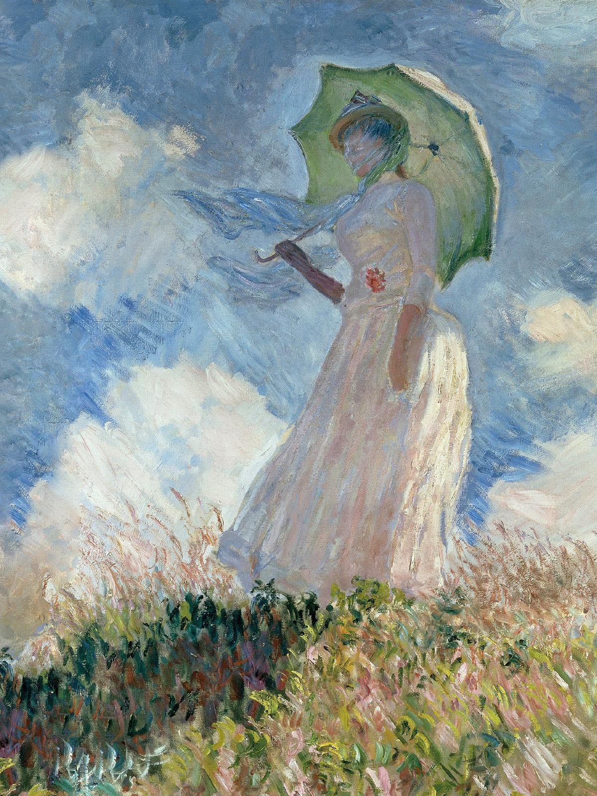
지난 크리스마스에 특별한 경험을 하고 싶어 용산 전쟁기념관에서 열린 ‘모네, 빛을 그리다’라는 전시회에 가게 되었습니다. 해외 여행을 할 때마다 미술관에 방문해서 그의 작품을 찾아 보는걸 좋아하는 클로드 모네의 팬인 저로서는, 모네의 작품을 국내에서 즐길 수 있는 더없이 소중한 시간이기도 했습니다. 모네의 작품을 디지털로 표현한 전시였기에 더욱 기대를 안고 갔습니다.
전시회를 통해 느낀 제 경험은 사람에게 있어 가치 있는 경험이 얼마나 중요한지, ‘UX의 긍정적인 측면’을 직접 느낄 수 있는 기회이기도 했습니다. 심리학 전공의 UX 컨설턴트로서, 제가 배운 심리학은 ‘경험’이 사람에게 미치는 영향을 좀더 깊이 있는 관점으로 이해할 수 있도록 돕는 귀한 자양분이 되고 있습니다. rightbr*** | 2021.12.27
전시회를 통해 느낀 제 경험은 사람에게 있어 가치 있는 경험이 얼마나 중요한지, ‘UX의 긍정적인 측면’을 직접 느낄 수 있는 기회이기도 했습니다. 심리학 전공의 UX 컨설턴트로서, 제가 배운 심리학은 ‘경험’이 사람에게 미치는 영향을 좀더 깊이 있는 관점으로 이해할 수 있도록 돕는 귀한 자양분이 되고 있습니다. rightbr*** | 2021.12.27
요시고 사진전(YOSIGO) : 따뜻한 휴일의 기록
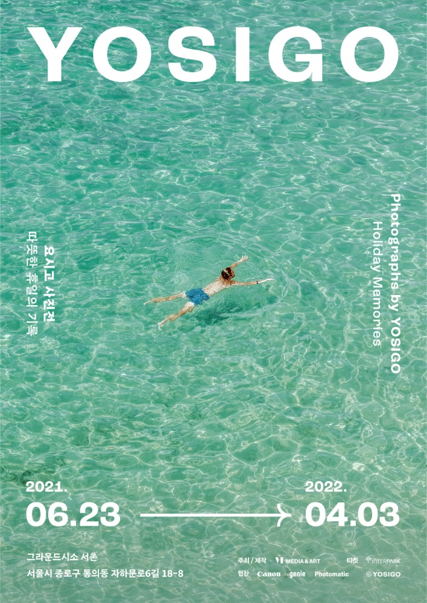
햇빛이 뜨거웠던 7월 초, 요시고 전시회에 다녀왔다. 얼리버드 사서 가겠다고 달력에 표시해 놓고는 얼리버드 못 사서 제 돈 다 주고 간 전시회. 문화수라도 어떻게 공략해보려 했더니 도저히 수요일엔 갈 수가 없던 전시회. 인기가 너무 많아 사람이 바글바글 하다기에 오픈런뛰려고 했으나 거리가 너무 멀어 개관 1시간 후 도착해 30분 대기 탄 전시회. 좋은 전시회에 다녀와서 힐링도 되고, 영감도 많이 얻고 간다.
fresh*** | 2021.07.11
살바도르 달리 Imagination and Reality
3개 미술관에 콜라보 했다고 믿을 수 없을 정도로 전시 구성이 훌륭하다. 달리의 탄생과 유년시절부터 그가 빠져들었던 예술 사조와 학문을 시간의 흐름에 따라 배치했다. 그림과 영상을 교차 전시해, 관람객의 몰입도를 높였다.
달리가 직접 참여한 영화와 애니메이션을 전시 말미에 배치한 점도 인상 깊었다. 비디오 작품이 체력이 떨어질 때쯤, 집중력을 다시 높여주는 데 탁월한 역할을 했다고 본다. 달리를 논할 때 빼놓을 수 없는 갈라를 중심인물로 서술한 점도 좋았다. oho*** | 2021.12.01
달리가 직접 참여한 영화와 애니메이션을 전시 말미에 배치한 점도 인상 깊었다. 비디오 작품이 체력이 떨어질 때쯤, 집중력을 다시 높여주는 데 탁월한 역할을 했다고 본다. 달리를 논할 때 빼놓을 수 없는 갈라를 중심인물로 서술한 점도 좋았다. oho*** | 2021.12.01
돌로레스 마라의 시간 : 블루
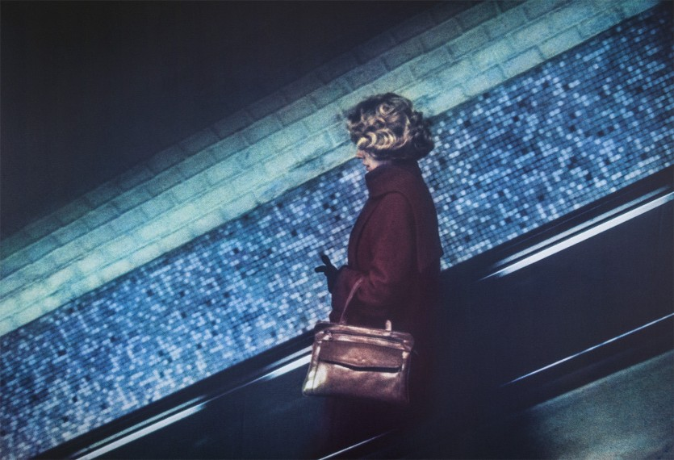
전시회, 〈돌로레스 마라의 시간 : 블루〉를 관람하기 위해 고은사진미술관으로 향했습니다. 친구가 여기 사진전에 관한 링크를 보내줘서 친구들과 함께 관람했어요. 무료 전시인데 이 정도 퀄리티라니 너무 좋았습니다.
foodwal*** | 2024.06.02
제이알 크로니클스 전시회 [ JR: CHRONICLES ]
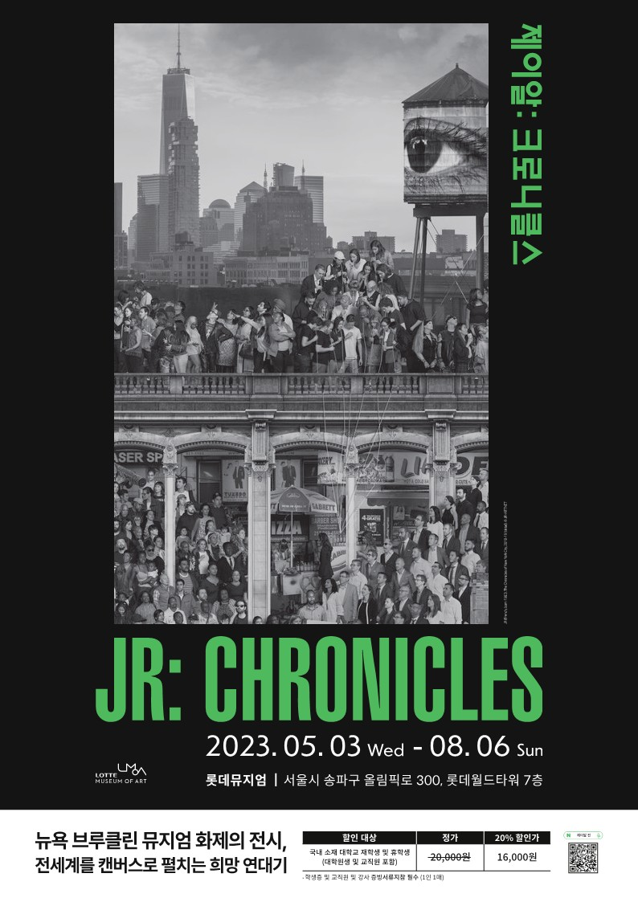
현존하는 최고의 공공미술가이자 그래피티 작가로 불리는 '제이알 크로니클스 전시회' 관람후기입니다. 사실 전시 전에는 작가를 잘 모르지 못했는데요. 이번 전시회를 통해 JR의 매력에 빠졌습니다.
생각보다 작품 하나하나에 많은 이야가와 메시가 있고, 관련 멀티미디어 정보도 많이 준비되어 있어 서너시간 여유를 가지고 감상하시는 것을 추천 드립니다. a*** | 2023.05.06
생각보다 작품 하나하나에 많은 이야가와 메시가 있고, 관련 멀티미디어 정보도 많이 준비되어 있어 서너시간 여유를 가지고 감상하시는 것을 추천 드립니다. a*** | 2023.05.06